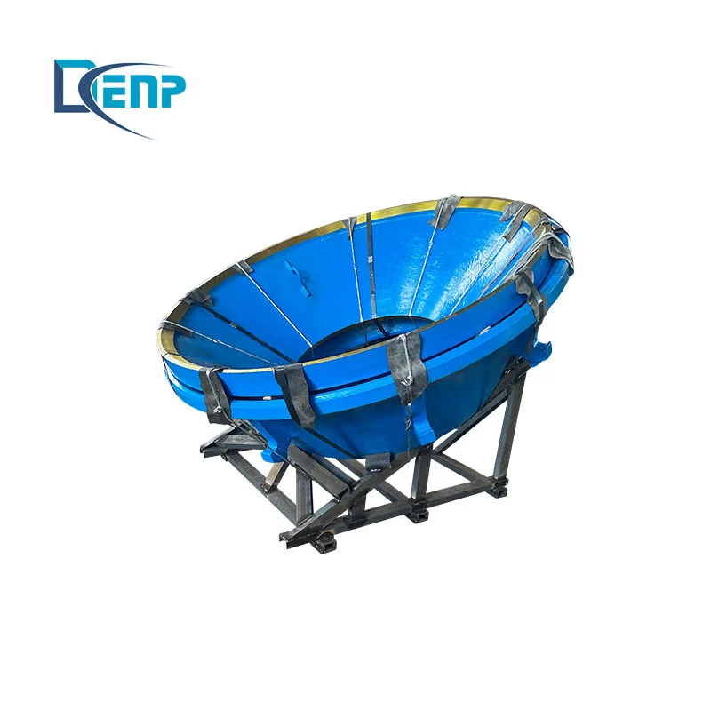

| Модели | Детали |
|---|---|
| Модели | SmartCell 300m³ |
| Изнашиваемые детали | Impellers, Diffusers, Rotors |
Изготовлено из премиальных износостойких сплавов: высокомарганцевая сталь, Cr-Mo сплав, высокохромистый чугун.
SmartCell 300m³
Импеллеры, диффузоры
Вращающийся элемент, диспергирующий воздух в пузырьки и суспендирующий частицы
| Grade | Base | Hardness | Tensile | Abrasion |
|---|---|---|---|---|
| Natural Rubber / Polyurethane | NR/SBR or PU | Shore A 50-75 | ≥ 20 MPa | DIN ≤ 150 mm³ |
Превосходная коррозионная и кавитационная стойкость; снижение шума на 50-70%
| Grade | C | Si | Mn | Cr | Mo | Ni |
|---|---|---|---|---|---|---|
| Cr26 | 2.0-3.3 | ≤1.0 | 0.5-1.5 | 23.0-30.0 | 1.0-3.0 | ≤1.5 |
Сетка карбидов M7C3 обеспечивает превосходную износостойкость; срок службы в 3-5 раз дольше марганцевой стали
Неподвижный элемент вокруг ротора; создаёт зону сдвига для прикрепления пузырьков
| Grade | Base | Hardness | Tensile | Abrasion |
|---|---|---|---|---|
| Natural Rubber / Polyurethane | NR/SBR or PU | Shore A 50-75 | ≥ 20 MPa | DIN ≤ 150 mm³ |
Превосходная коррозионная и кавитационная стойкость; снижение шума на 50-70%
Роторно-статорный блок WEMCO для флотации
| Grade | C | Si | Mn | Cr | Mo |
|---|---|---|---|---|---|
| Cr15 | 2.0-3.3 | ≤1.2 | ≤1.5 | 13.0-18.0 | ≤3.0 |
Баланс твёрдости и вязкости; универсален для средних нагрузок
| Grade | C | Si | Mn | Cr | Mo |
|---|---|---|---|---|---|
| Cr20 | 2.0-3.3 | ≤1.2 | ≤1.5 | 18.0-23.0 | ≤3.0 |
Высокая твёрдость с умеренной вязкостью; била и молоты